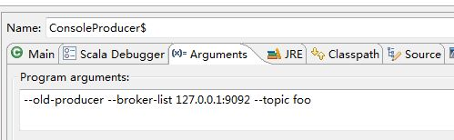
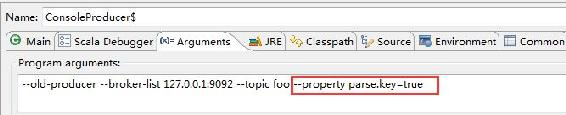
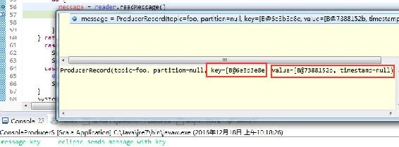
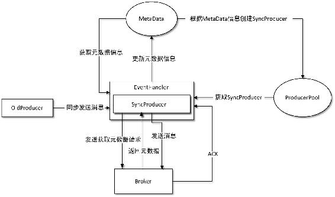
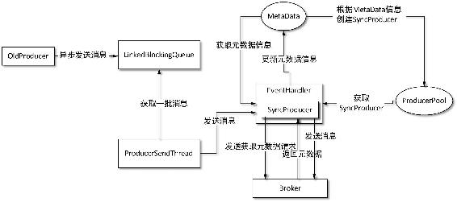
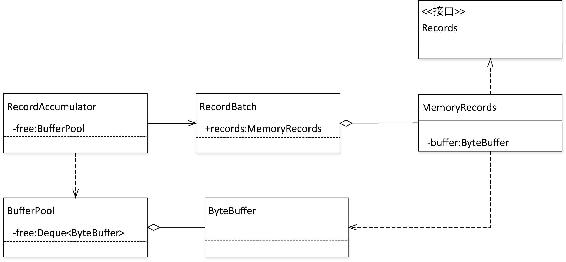
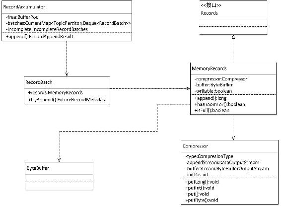
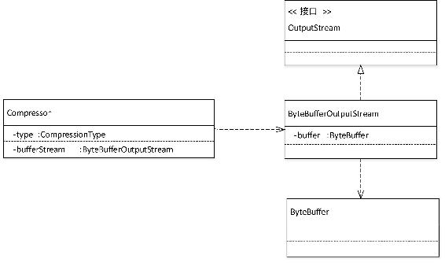
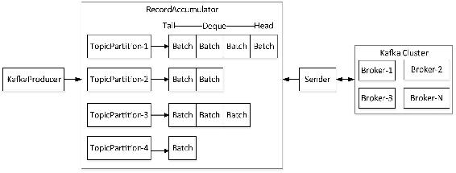
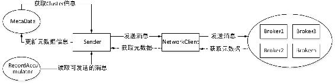

4.3 生产者
从Kafka 0.8.2版本开始，Kafka发布了一套Java版的client API（本书将其简称为Java Client），对原核心包中的生产者和消费者的实现逻辑用Java进行了重新实现，并独立出了一个client工程。在0.10版本之后的Kafka，生产者和消费者推荐使用Java Client这套新的API，Scala版本的API已被废弃，在未来版本中将被移除。因此在对生产者和消费者实现原理讲解时也是重点对Java重新实现的新版生产者和消费者的执行流程进行讲解。
4.3.1 Eclipse运行生产者源码
Kafka提供了一个在终端运行生产者的脚本kafka-console-producer.sh，在该脚本中只有一条执行命令：
exec $(dirname $0)/kafka-run-class.sh kafka.tools.ConsoleProducer "$@"由脚本代码可知，该脚本调用的是ConsoleProducer，而ConsoleProducer真正的执行者是OldProducer或NewShinyProducer。其中OldProducer依然是调用Scala实现的老版本生产者，而NewShinyProducer实质是对Java Client中的KafkaProducer进行了包装，调用的是KafkaProducer。不过在0.10版本之后这两个生产者都已被废弃，由KafkaProducer代替。
当启动生产者时若指定了参数--old producer，如生产者启动命令为：
kafka-console-producer.sh --old-producer --broker-list brokerIp:port --topic topic-name以上启动命令会调用OldProducer，若不指定--old producer参数则会调用NewShiny Producer，由KafkaProducer真正执行。读者不妨在本地Eclipse中运行Kafka，然后以debug模式来调试ConsoleProducer。由于生产者启动至少需要指定要连接的代理列表（broker-list）及消息被发送的主题，对一个Kafka集群往往会有多个节点，这里并不要求指定所有的节点，之所以以broker-list的方式接受，是为了保证所提供的代理节点至少有一个节点是存活的，这样便于顺利与Kafka集群建立连接。例如，在本地Eclipse中指定运行OldProducer，向主题名为“foo”的主题发送消息，则在ConsoleProducer运行参数中加上如下配置参数：
--old-producer --broker-list 127.0.0.1:9092 --topic foo
# 以老版本的Producer执行消息发布在Eclipse中配置如图4-7所示。
在生产者启动后，即可以在控制台直接输入消息，进行消息发送。同样用Kafka自带的生产者客户端，不管是在Windows环境、mac环境，还是Linux环境下，生产者启动后，一直会等待从控制台的输入的消息。当在控制台输入消息敲回车键后，生产者就会收到输入的消息，这是由ConsoleProducer内部类LineMessageReader实现，监听控制台的输入，当然客户端也可自定义读取消息的类，在启动生产者时通过参数--line-reader <reader_class>指定。

图4-7 Eclipse启动老版本生产者相关配置
默认输入的消息是没有Key的，Key的作用在后面将详细讲解。LineMessageReader定义了为消息指定Key的实现方式，通过配置项parse.key来指定消息是否会包括Key，该配置项默认是false，即将控制台输入所有内容都当作是消息的Value。还可以指定Key和Value之间的分隔符，默认是制表符“\t”。如果希望在发送消息时指定Key，则在producer.properties文件中加入parse.key=true配置。若希望在Eclipse中调试，则在Ｅclispe运行ConsoleProducer时加入开启Key解析的配置，可以在配置文件中加入配置项，然后在启动生产者时通过指定配置项--producer.config <config file>加载，也可以通过命令--property key=value直接指定配置项参数键和值，如增加parse.key=true配置。
--old-producer --broker-list 127.0.0.1:9092 --topic foo --property parse.key=true在Eclipse中开启消息的Key配置如图4-8所示。

图4-8 在Eclipse中开启消息的Key配置
在控制台输入Key和Value之间以Tab键分隔回车后，通过debug模式可以查看到消息的Key和Value均已有值，如图4-9所示。也可以通过Kafka提供的kafka.tools.DumpLogSegments查看消息详细内容，该工具用法在5.3.3节将详细介绍。Eclipse运行生产者相关调试就介绍至此，读者可以尝试在运行生产者时设置更多的参数进行调试。

图4-9 Eclipse查看消息发送结果
4.3.2 生产者重要配置说明
在对生产者实现原理分析之前，我们先对生产者在实际应用中常用的配置予以介绍。这些配置是我们开发生产者程序或者对生产者性能进行优化需要关注的点。
首先要介绍的是acks配置项，Kafka为生产者提供3种消息确认机制（acks），用于配置代理接收到消息后向生产者发送确认信号，以便生产者根据acks进行相应处理，该机制通过属性request.required.acks设置，取值可为0、−1、1中之一，默认取1。
（1）当acks=0时，生产者不用等待代理返回确认信息，而连续发送消息。显然这种方式加快了消息投递的速度，然而无法保证消息是否已被代理接受，有可能存在丢失数据的风险。
（2）当acsk=1时，生产者需要等待Leader副本已成功将消息写入日志文件中。这种方式在一定程度上降低了数据丢失的可能性，但仍无法保证数据一定不会丢失。如果在Leader副本成功存储数据后， Follower副本还没有来得及进行同步，而此时Leader宕机了，那么此时虽然数据已进行了存储，由于原来的Leader已不可用而会从集群中下线，同时存活的代理又再也不会有从原来的Leader副本存储的数据，此时数据就会丢失。
（3）当acks=−1时，Leader副本和所有ISR列表中的副本都完成数据存储时才会向生产者发送确认信息，这种策略保证只要Leader副本和Follower副本中至少有一个节点存活，数据就不会丢失。为了保证数据不丢失，需要保证同步的副本至少大于1，通过参数min.insync.replicas设置，当同步副本数不足此配置值时，生产者会抛出异常，但这种方式同时也影响了生产者发送消息的速度以及吞吐量。
其次介绍的是batch.num.messages配置项，Kafka支持消息批量（Batch）向代理特定分区发送消息，批量大小由属性batch.num.messages设置，表示每次批量发送消息的最大消息数，当生产者采用同步模式发送时该配置项将失效。
其实还有很多与生产者相关的配置值得关注，如消息是同步发送还是异步发送、发送失败尝试重发的次数等，这里不再一一列举。生产中需要关注的配置整理如表4-6所示。
表4-6 生产者重要配置属性说明
|
属 性 名 |
默认值 |
描 述 |
|---|---|---|
|
message.send.max.retries |
3 |
设置当生产者向代理发信息时，若代理由于各种原因导致接受失败，生产者在丢弃该消息前进行重试的次数 |
|
retry.backoff.ms |
100 |
在生产者每次重试之前，生产者会更新主题的MetaData信息，以此来检测新的Leader是否已选举出来。因为选举Leader需要一定时间，所以此选项指定更新主题的MetaData之前生产者需要等待的时间，单位为ms |
|
queue.buffering.max.ms |
1000 |
在异步模式下，表示消息被缓存的最长时间，单位为ms，当到达该时间后消息将开始批量发送；若在异步模式下同时配置了缓存数据的最大值batch.num.messages，则达到这两个阈值之一都将开始批量发送消息 |
|
queue.buffering.max.messages |
10000 |
在异步模式下，在生产者必须被阻塞或者数据必须丢失之前，可以缓存到队列中的未发送的最大消息条数，即初始化消息队列的长度 |
|
batch.num.messages |
200 |
在异步模式下每次批量发送消息的最大消息数 |
|
request.timeout.ms |
1500 |
当需要acks时，生产者等待代理应答的超时时间，单位为ms。若在该时间范围内还没有收到应答，则会发送错误到客户端 |
|
send.buffer.bytes |
100kb |
Socket发送缓冲区大小 |
|
topic.metadata.refresh.interval.ms |
5min |
生产者定时请求更新主题元数据的时间间隔。若设置为0，则在每个消息发送后都去请求更新数据 |
|
client.id |
console-producer |
生产者指定的一个标识字段，在每次请求中包含该字段，用来追踪调用，根据该字段在逻辑上可以确认是哪个应用发出的请求 |
|
queue.enqueue.timeout.ms |
2147483647 |
该值为0表示当队列没满时直接入队，满了则立即丢弃，负数表示无条件阻塞且不丢弃，正数表示阻塞达到该值时长后抛出QueueFullException异常 |
4.3.3 OldProducer执行流程
OldProducer是Scala版本的生产者，支持同步模式（sync）及异步模式（async），通过属性producer.type进行配置。若通过Kafka自带的kafka-console-producer.sh脚本运行生产者时，也可以通过参数--sync或者配置producer.type=sync指定生产者以同步模式运行。
kafka-console-producer.sh --old-producer --broker-list brokerIp:port --topic topic-
name --sync下面对OldProducer实现原理进行详细讲解。这里我们主要关注的是OldProducer实例化过程及发送消息的过程。
1．实例化过程
当实例化一个OldProducer时，首先要读取、解析配置信息以及对配置项合法性校验，根据配置信息实例化生产者。相关的配置较多，例如，用户可以指定根据业务场景开发的序列化类、指定消息压缩方式等，这里不再一一列举，读者可以根据自身业务需要参考表4-6所示的配置说明进行设置。
同时在生产者初始化时，会创建一个LinkedBlockingQueue的消息队列，并创建一个EventHandler对象和ProducerPool对象，ProducerPool保存的是生产者与代理的连接，每个连接对应一个SyncProducer对象。ProducerPool内部有一个HashMap的数据结构，以代理的brokerId作为Map的Key，根据启动生产者时配置信息及broker-list指定的代理信息初始化SyncProducer。参数broker-list指定的每组代理对应一个SyncProducer，SyncProducer包装了NIO网络层操作，每个SyncProducer都是一个与相应代理建立的Socket连接，是真正将消息发往代理的执行者。而EventHandler的作用是对消息进行发送前的准备，主要完成以下操作。
（1）进行序列化操作，用户可以指定序列化类。
（2）获取主题的元数据信息，包括主题对应的代理和分区信息、代理列表信息、分区的Leader及副本等。
（3）管理缓存中的主题元数据信息和每个主题对应的要发送的分区元数据信息，并不是每次发送消息时都要向KafkaServer发送获取代理信息请求，只有当距离上一次更新主题元数据信息的时间间隔不小于${topic.metadata.refresh.interval.ms}毫秒时才向KafkaServer发送请求元数据信息的请求，获取成功会将元数据信息更新到缓存中，否则会从缓存中获取元数据信息。若有新的代理上线，会创建新的SyncProducer并保存到ProducerPool中，当然若${topic.metadata.refresh.interval.ms}配置为0，则每次发送时都会向KafkaServer请求主题的元数据信息。
（4）根据是否需要压缩及压缩方式对消息进行压缩处理，默认是不压缩。
（5）对处理后的数据进行分组分发。
在定位消息要发送到哪个分区时，若客户端指定了分区则返回指定的分区partitionId，否则采用Kafka默认的ByteArrayPartitioner分配策略。Kafka定义了一个Partitionor接口，支持客户端自定义Partitioner，我们将Partitioner称为分区器，分区器接口提供partition()方法和close()方法两个方法，Scala版本的Partitioner接口只有一个partition()方法。客户端自定义Partitoner时只需实现该接口，并在partition()方法中实现消息被分配到相应分区的分配策略。Kafka默认的Partitionor根据消息Key的hashCode与分区总数取模的方式来分配分区。若消息包括Key，则取Key的hashCode然后与可用的分区总数求模，若消息不包括Key，则会产生一个随机数然后与可用的分区总数求模。分区分配好后会把元数据信息存储到缓存中。
若是以异步方式发送消息，则创建一个ProducerSendThread线程并启动该线程。至此，OldProducer实例化过程分析完毕。
2．发送消息
在发送消息时，根据消息发送方式的不同，执行逻辑会有区别。同步模式会调用EventHandler对消息进行处理后，从ProducerPool中取出发送消息的SyncProducer将消息发送到代理，而异步方式发送消息时首先会将消息插入到消息队列LinkedBlockingQueue中，当距离上一次SyncProducer将消息发往代理时间间隔不小于${queue.buffering.max.ms}或队列中缓存的消息数不小于${batch.num.messages}时才将消息发往代理。
同步发送和异步发送方式最大的区别在于异步模式会首先将消息存入到消息队列，然后由一个独立的线程判断是否需要将数据向代理发送。两种发送方式的主要流程如图4-10和图4-11所示。

图4-10 同步模式发生消息基本流程

图4-11 异步模式发送消息基本流程
需要说明的是，只有在生产者调用send()方法发送消息时，才会触发EventHandler相关的操作，所以当代理上线或下线时，生产者只有在调用send()方法时才会感知代理的变化。在每次调用send()方法时会定期刷新Metadata，在获取MetaData信息时会从ProducerPool中取一个SyncProducer，一个SyncProducer就是创建的与相应代理的一个Socket连接，由SyncProducer请求完整的MetaData信息，这样就会感知代理的健康状况。同时ProducerPool会根据MetaData信息定期更新池中的SyncProducer，重连与代理的连接。即当池中存在与MetaData中代理的brokerId对应的SyncProducer，则先关闭原来的SyncProducer，然后再重新创建一个SyncProducer并保存到池中，若池中不存在则直接创建并加入到池中。由于更新MetaData并完成SyncProducer重建工作会有一定的延迟，若不希望有延迟，可以将topic.metadata.refresh. interval.ms的值设置为一个负数，表示只有当发送失败时，才会请求完整的MetaData信息。通过定期重连或当发送失败时重连就能够感知代理的变化。
4.3.4 KafkaProducer实现原理
KafkaProducer是一个用Java语言实现的Kafka客户端，实现了Producer接口，用于将消息（ProducerRecord）发送至代理。KafkaProducer是线程安全的，在一个Kafka集群中多线程之间共享同一个KafkaProducer实例通常比创建多个KafkaProducer实例性能要好。KafkaProducer有一个缓存池，用于存储尚未向代理发送的消息，同时一个后台I/O线程负责从缓存池中读取消息构造请求，将消息发送至代理，本小节将对KafkaProducer的实现原理进行详细讲解。
用Java语言重新实现的KafkaProducer与老版本的生产者异步模式的设计思想很类似，只不过在实现细节及采用的数据结构上有所不同，同时老版本的生产者同步模式和异步模式分开实现，而KafkaProducer的同步模式是通过异步模式来实现，因为异步发送消息Future <RecordMetadata>send(ProducerRecord<K, V> record, Callback callback)方法返回的是一个Future类型对象，因此若以同步模式发送消息只需调用Future的get()方法进行阻塞，直到返回响应。再者KafkaProducer的send()方法支持回调Callback接口，该接口中只定义了一个onCompletion(RecordMetadata metadata, Exception exception)方法，当发送消息的请求被KafkaServer接受并acks后会回调Callback。由于Callback一般是被生产者的I/O线程执行，Callback执行效率会对其他发送消息的线程有影响，因此在Callback中建议不处理一些比较耗时的逻辑，在设计时应该使得Callback尽可能快地完成执行，如果实在是要处理一些比较耗时的逻辑或诸如会使线程阻塞的操作时，推荐在Callback中使用并发编程，类似Java的Java.util.concurrent.Executor进行并发处理。同时Producer也保证Callback会被顺序执行，类似下面先后两次send操作：
producer.send(new ProducerRecord<byte[],byte[]>(topic, partition, key1, value1), callback1);
producer.send(new ProducerRecord<byte[],byte[]>(topic, partition, key2, value2), callback2);则callback1会在callback2前执行，为了保证Callback能够被顺序执行，会将Callback顺序保存到List中，在底层实现时将Callback对象与每次发送消息返回的FutureRecordMetadata对象封装为一个Thunk对象，在RecordBatch中会维护一个Thunk的链表thunks，用于记录同一批RecordBatch下每次发送的Record对应的Callback。
1．实例化过程
KafkaProducer在实例化时首先会加载和解析生产者相关的配置信息并封装成ProducerConfig对象，然后根据配置项主要完成以下对象或数据结构的实例化。
（1）从配置项中解析出clientId，客户端指定该配置项的值以便追踪程序运行情况，在同一个进程内，当有多个KafkaProducer时，若没有配置client.id则clientId以前辍“producer-”后加一个从1递增的整数。
（2）根据配置项创建和注册用于Kafka metrics指标收集的相关对象，用于对Kafka集群相关指标的追踪。
（3）实例化分区器。分区器用于为消息指定分区，客户端可以通过实现Partitioner接口自定义消息分配分区的规则。若用户没有自定义分区器，则在KafkaProducer实例化时会使用默认的DefaultPartitioner，该分区器分配分区的规则是：若消息指定了Key，则对Key取hash值，然后与可用的分区总数求模；若没有指定Key，则DefalutPartitioner通过一个随机数与可用的总分区数取模。
（4）实例化消息Key和Value进行序列化操作的Serializer。Kafka实现了七种基本类型的Serializer，如BytesSerializer、IntegerSerializer、LongSerializer等。用户也可以实现Serializer接口分别为Key和Value自定义序列化方式，当然在消费者消费消息时要实现相应的反序列化操作。若用户不指定Serializer，默认Key和Value使用相同的ByteArraySerializer。
（5）根据配置实例化一组拦截器（ProducerInterceptor），用户可以指定多个拦截器。如果我们希望在消息发送前、消息发送到代理并ack、消息还未到达代理而失败或调用send()方法失败这几种情景下进行相应处理操作，就可以通过自定义拦截器实现该接口中相应方法，多个拦截器会被顺序调用执行。
（6）实例化用于消息发送相关元数据信息的MetaData对象。MetaData是被客户线程共享的，因此MetaData必须是线程安全的。MetaData的主要数据结构由两部分组成，一类是用于控制MetaData进行更新操作的相关配置信息，另一类就是集群信息Cluster。Cluster保存了集群中所有的主题以及所有主题对应的分区信息列表、可用的分区列表、集群的代理列表等信息，在KafkaProducer实例化过程中会根据指定的代理列表初始化Cluster，并第一次更新MetaData。
（7）实例化用于存储消息的RecordAccumulator。RecordAccumulator的作用类似一个队列，这里称为消息累加器。KafkaProducer发送的消息都先被追加到消息累加器的一个双端对列Deque中，在消息累加器内部每一个主题的每一个分区TopicPartition对应一个双端队列，队列中的元素是RecordBatch，而RecordBatch是由同一个主题发往同一个分区的多条消息Record组成（在老版本中称消息称为message，在0.9之后版本中称为Record），并将结果以每个TopicPartiton作为Key，该TopicPartition所对应的双端队列作为Value保存到一个ConcurrentMap类型的batches中。采用双端队列是为了当消息发送失败需要重试时，将消息优先插入到队列的头部，而最新的消息总是插入到队列尾部，只有需要重试发送时才在队列头部插入，发送消息是从队列头部获取RecordBatch，这样就实现了对发送失败的消息进行重试发送。但是双端队列只是指定了RecordBatch的顺序存储方式，而并没有定义存储空间大小，在消息累加器中有一个BufferPool缓存数据结构，用于存储消息Record。在KafkaProducer初始化时根据指定的BufferPool的大小初始化一个BufferPool，引用名为free。消息累加器主要数据结构如下：
public final class RecordAccumulator {
省略不相关代码
private final AtomicInteger flushesInProgress;
private final AtomicInteger appendsInProgress;
private final int batchSize;
private final CompressionType compression;
private final long lingerMs;
private final long retryBackoffMs;
private final BufferPool free;
private final Time time;
private final ConcurrentMap<TopicPartition, Deque<RecordBatch>> batches;
private final IncompleteRecordBatches incomplete;
private final Set<TopicPartition> muted;
……省略不相关代码……RecordAccumulator主要数据结构部分属性在表4-7关于KafkaProducer重要配置说明中进行阐述。其中flushesInProgress用于flush操作控制记数器，appendsInProgress用于append操作控制记数器，incomplete用于保存已写入内存而未被Sender处理的Record Batch，muted用于保存消息已发送但还未收到ack的TopicPartition，每一个Topic Partion对应一个分区。
（8）根据指定的安全协议${ security.protocol}创建一个ChannelBuilder，Kafka目前支持PLAINTEXT、SSL、SASL_PLAINTEXT、SASL_SSL和TRACE这5种协议。然后创建NetworkClient实例，这个对象的底层是通过维持一个Socket连接来进行TCP通信的，用于生产者与各个代理进行Socket通信。由NetworkClient对象构造一个用于数据发送的Sender实例sender线程，最后通过sender创建一个KafkaThread线程，启动该线程，该线程是一个守护线程，在后台不断轮询，将消息发送给代理。
至此，KafkaProducer实例化主要工作已完成。在4.3.2节列举了一些重要的配置，如表4-7所示是再补充的几个关于KafkaProducer的重要配置。
表4-7 KafkaProducer重要配置属性说明
|
属性名 |
默认值 |
属性描述 |
|---|---|---|
|
metadata.max.age.ms |
5 min |
用于配置强制更新metadata的时间间隔，单位是ms |
|
max.request.size |
1 MB |
用于配置生产者每次请求的最大字节数 |
|
buffer.memory |
32 MB |
用于配置RecordAccumulator中BufferPool的大小 |
|
batch.size |
16 KB |
用于配置RecordBatch的大小 |
|
linger.ms |
1000 ms |
生产者默认会把两次发送时间间隔内收集到的所有发送消息的请求进行一次聚合然后再发送，以此提高吞吐量，如消息聚合的数量小于batch.size，则再在这个时间间隔内再增加一些延时。通过该配置项可以在消息产生速度大于发送速度时，一定程度上降低负载。 |
|
max.block.ms |
60 s |
消息发送或获取分区元数据信息时最大等待时间 |
|
max.in.flight.requests.per.connection |
5 |
用于设置每个连接的最大请求个数 |
|
retries |
0 |
用于配置发送失败的重试次数，默认是0，即不重试。Kafka自带的客户端设置发送失败时重试3次 |
2．send过程分析
在KafkaProducer实例化后，调用KafkaProducer.send()方法进行消息发送。下面通过对Future<RecordMetadata> send(ProducerRecord<K, V> record, Callback callback)方法进行分析，详细讲解消息send的过程。
首先，若客户端指定了拦截器链ProducerInterceptors（由一个或多个ProducerInterceptor构成的List，List<ProducerInterceptor<K, V>> interceptors），则ProducerRecord会被拦截器链中每个ProducerInterceptor调用其onSend(ProducerRecord<K, V> record)方法进行处理。
接着，调用KafkaProducer.doSend()方法进行处理。为了讲解方便，将doSend()方法分以下几步进行讲解。
（1）获取MetaData。通过调用waitOnMetadata()方法对MetaData进行相应处理获取元数据信息MetaData，因为只有获取到Metadata元数据信息才能真正进行消息的投递，因此该方法会一直被阻塞尝试去获取MetaData，若超过${max.block.ms}时间后，依然没有获取到MetaData信息，则会抛出TimeoutException宣告消息发送失败，若客户端定义了拦截器，同时实现了onAcknowledgement()方法则该异常会被拦截器进行处理。KafkaProducer会调用ProducerInterceptors.on SendError()方法进行处理，在该方法中会按序逐个调用ProducerInterceptor.onAcknowledgement()进行处理。
（2）序列化。根据KafkaProducer实例化时创建的Key和Value的Serializer，分别对ProducerRecord的Key和Value进行序列化操作，将Key和Value转为byte数组类型。
（3）获取分区。计算ProducerRecord将被发往的分区对应的partitionId，如果客户端在创建ProducerRecord时指定了partitionId则直接返回所指定的partitionId，否则根据分区器定义的分区分配策略计算出partitionId。
（4）ProducerRecord长度有效性检查。检查ProducerRecord总长度是否超过了${max.request.size}及${buffer.memory}所设阈值，超过任何一项阈值配置都会抛出RecordTooLargeException。
（5）创建TopicPartition对象。根据ProducerRecord对应的topic及partitionId，创建一个TopicPartition对象，在RecordAccumulator中会为每个TopicPartiton创建一个双端队列。
（6）构造Callback对象。由KafkaProducer实例化时定义的ProducerInterceptors和Callback重新构造一个Callback对象，该对象最终会交由RecordBatch处理。
（7）写BufferPool操作。这一步是调用RecordAccumulator.append()方法将ProducerRecord写入RecordAccumulator的BufferPool中。
（8）返回第7步的处理结果。
至此，send过程分析完毕。现在我们着重对RecordAccumulator.append()方法实现逻辑进行分析。下面详细介绍RecordAccumulator.append()方法的执行逻辑。
首先，将append操作的记数器appendsInProgress进行incrementAndGet操作，记数加1，若append操作失败则需要将appendsInProgress进行decrementAndGet操作恢复原值，记数减1，appendsInProgress记数是为了追踪正在进行追加操作的线程数，以便当客户端在调用KafkaProducer.close()方法强制关闭发送消息操作时，sender调用消息累加器的abortIncomplete Batches()方法，放弃未处理完的请求，释放资源。
接着，通过本ProducerRecord构造的TopicPartition获取其对应的双端队列Deque<RecordBatch>。若获取不到当前TopicPartition关联的Deque则创建一个空的Deque对象，并将新创建的Deque与该TopicPartition保存到batches中关联起来。在获取Deque之后，调用RecordAccumulator.try Append()方法，尝试进行消息写入操作。该过程是一个同步操作，而锁的对象为Deque，这也保证了相同TopicPartiton的append操作只能顺序执行，当有一个线程正在进行append操作时，与之相同TopicPartiton的客户端就不能进行append操作，必须等待，这样就能保证写入同一个分区的数据在BufferPool是有序写入的。
现在再来分析RecordAccumulator.tryAppend()方法的具体实现。在分析tryAppend()方法之前，我们首先要明确RecordAccumulator、BufferPool、RecordBatch、MemoryRecords、ByteBuffer之间的关系，在实例化RecordAccumulator时，会创建一个BufferPool，BufferPool维护了一个Deque<ByteBuffer>的双端队列，而RecordBatch是由相同TopicParttion的Record组成的，在RecordBatch中定义了一个MemoryRecords对象，MemorRecords底层是一个消息缓冲区ByteBuffer，Record最终是被写入BufferPool维护的Deque的一个ByteBuffer之中。这几个类的关系如图4-12所示。
在tryAppend()方法执行时，首先会从双端队列队尾中取出一个RecordBatch，若RecordBatch不为null，则调用RecrodBatch.tryAppend()方法尝试将Record写到消息缓冲区。RecrodBatch. tryAppend()方法首先检查是否有空间以继续容纳新的Record，若无空间则直接返回null交由消息累加器继续处理，否则通过压缩器Compressor将Record写入ByteBuffer中，若写入成功则进行以下处理。
（1）取当前的maxRecordSize与写入的Record总长度两者之中较大者更新当前Record Batch的maxRecordSize。maxRecordSize用于Kafka相关指标监控，sender会交由相应的Sensor处理。

图4-12 RecordAccumulator底层实现类图
（2）更新lastAppendTime。每次append()操作完成后更新该字段，记录最后一次追加操作的时间。
（3）构造一个FutureRecordMetadata类型future对象。FutureRecordMetadata实现Future接口，future由新写的Record在RecordBatch中相对偏移量offsetCounter、时间戳、Record的CRC32校验和、Record的Key和Value序列化后的size及一个ProduceRequestResult类型result组成。同一个RecordBatch中的Record共享同一个result，result用于sender线程控制RecordBatch中的Record是否被成功提交相关操作，result保存了该RecordBatch的起始偏移量（baseOffer）及TopicPartiton信息。
（4）通过future和callback创建一个Thunk对象添加到thunks列表中。
（5）用于统计RecordBatch中Record总数的recordCount加1。
（6）返回future。
经过以上处理之后，若future为null即RecordBatch已无空间继续接受新的Record时，则将该RecordBatch进行close操作，否则根据future实例化一个RecordAppendResult对象。实例化RecordAppendResult对象调用的构造函数入参除了future对象外，还有两个boolean类型的参数batchIsFull及newBatchCreated，这两个参数分别用来标识RecordBatch是否已满和当前RecordBatch是否为新创建的。
当RecordBatch所在双端队列size大于1或当前RecordBatch已不能再被写入时（writable为false，或者可写缓冲区的写限制writeLimit不大于compressor预估算的大小），将batchIsFull标识设置为true。若队列中无该TopicPartition对应的RecordBatch或RecordBatch无空间容纳新的Record时，先比较当前Record所需要的空间与batchSize大小，取其较大者作为向BufferPool申请分配空间的size。为了谨慎起见，可能此时已有同TopicPartition的其他线程创建了RecordBatch或RecordBatch中的部分Record已被sender处理释放了空间，此时已有空间可容纳新的Record，则再次调用tryAppend()方法，尝试写入，若此时写入成功，则释放刚才从BufferPool中申请的空间，否则根据申请的空间创建一个新RecordBatch对象，然后再进行写入操作。
写入完成后将新创建的RecordBatch添加到该TopicPartiton对应的双端队列之中，同时将新创建的RecordBatch加入消息累加器的incomplete中，最后实例化RecordAppendResult对象返回给KafkaProducer。在KafkaProducer的doSend()方法中，若RecordAppendResult对象的batchIsFull或newBatchCreated中有一个为true时则唤醒sender线程，同时返回RecordAppend Result的future。Record append()操作涉及的几个操作调用关系如图4-13所示。

图4-13 Record追加操作调用关系的类图
在Record.append()操作过程中负责对Record写操作的执行者是Compressor，Compressor根据当前版本支持的4种压缩类型：none（不压缩）、gzip、snappy及lz4，ByteBufferOutputStream和默认缓冲区大小（1024字节）实例化一个DataOutputStream对象，而ByteBufferOutputStream继承OutputStream，内部唯一的一个属性就是ByteBuffer，同时提供了对ByteBuffer的write方法，因此Compressor最终是将Record写入ByteBuffer中，类图如图4-14所示。
至此，KafkaProducer发送Record的第一步操作将Record写入消息缓冲区过程分析完毕。第二步由sender线程从消息累加器中取出Record将请求发送到相应Kafka节点，我们将在下一小节进行详细讲解。

图4-14 Compressor执行write操作的类图
3．Sender发送消息
上一节对KafkaProducer的send过程进行了分析，但send操作没有发起网络请求，只是将消息发送到消息缓冲区，而网络请求是由KafkaProducer实例化时创建的Sender线程来完成的。后台线程Sender不断循环，把消息发送给Kafka集群。一个完整的KafkaProducer发送消息过程如图4-15所示。

图4-15 KafkaProducer生产消息主体流程
由图4-15可以看出，KafkaProducer发送的消息Record会根据TopicPartition分组保存到RecordAccumlator中，也就是会根据主题和分区进行分组。图4-15中的Batch表示一个RecordBatch，RecordAccumlator将Record按要送达的分区进行分组，每个TopicPartiton对应一个双端队列Deque，保存到一个以TopicPartition为Key、以TopicPartiton对应的Deque为值的ConcurrentMap类型的batches中。消息会被Compressor处理追加到一个BatchRecord中，在KafkaProducer发送消息send()实现过程中追加Record时，总是从队列队尾（Tail）取出BatchReocrd（如果队列不为空），而Sender是从队列头（Head）取Record进行处理。本小节将深入讲解KafkaProducer如何将消息经由网络层发到Kafka集群。
在KafkaProducer实例化时，创建了一个KafkaThread线程对象。该对象包装了一个Sender线程，在KafkaProducer实例化时启动该线程即启动了Sender，Sender在后台运行负责将RecordAccumlator中存储的Record发送到Kafka。Sender作为一个线程实现了Runnable接口，因此了解Sender的执行过程就是要弄清在run()方法中实现了哪些操作。在讲解Sender的run()方法之前，我们先简要介绍KafkaProducer发送消息在网络层执行过程涉及的类，如图4-16所示。

图4-16 消息发送网络层的类层次关系
由图4-16可知，Sender将消息发送到Kafka相应代理节点主要依赖于KafkaClient、RecordAccumlator及MetaData这3个对象，其中KafkaClient是一个接口，该接口定义了KafkaClient与网络交互的方式，而其唯一实现类是NetworkClient。从Sender所依赖的3个类我们大致可以梳理出Sender操作基本流程如下。
首先从MetaData中获取集群信息，然后从RecordAccumulator中取出已满足发送条件的BatchRecord并构造相关网络层请求交由NetworkClient去执行。在这个过程中需要取出每个TopicPartition所对应的分区Leader，而有可能某个TopicPartition的Leader不存在，则会触发请求MetaData更新操作。在发送过程中NetworkClient内部维护了一个InFlightRequests类型的inflightRequests对象用于保存已发送但还没有收到响应的请求。在这个流程当中Sender作用很像是一个任务调度器，而NetworkClient是网络请求的真正执行者，Sender不断从RecordAccumulator取出数据构造请求交由NetworkClient去执行，如图4-17所示。

图4-17 Sender网络层基本组件调用流程
在对Sender执行流程进行了简单描述之后，下面详细分析Sender是如何将消息最终发送到Kafka相应节点的。由于Sender是一个线程，因此从run()方法作为切入点进行分析。当KafkaProducer没有执行close()方法时，Sender作为后台线程会一直执行，此时标识字段running一直为true，表示Sender线程正在运行，即run()方法一直会被执行，run()方法内部仅做条件控制，而真正负责逻辑处理的是一个带参数的run(long now)方法，该方法入参为调用该方法时系统当前时间，方法体逻辑如下。
（1）获取Cluster信息。从MetaData中获取集群Cluster信息。
（2）获取各TopicPartition分区的Leader节点集合。
（3）根据第2步执行返回的结果ReadyCheckResult对象，进行以下处理：若unknown LeaderTopics不为空，即存在没有找到分区Leader的主题，则遍历unknownLeaderTopics集合将主题信息加入metaData中，然后调用metaData.requestUpdate()方法将needUpdate设置为true，请求更新metaData信息。
（4）检测与ReadyCheckResult.readyNodes集合中各节点连接状态，通过调用Network Client.ready(Node node,long now)方法来完成检测工作。该方法除检测连接状态之外，同时根据一定条件决定是否为还未建立连接的节点创建连接。若与某个节点的连接还未就绪则将该节点从readyNodes中移除，经过NetworkClient.ready()方法处理之后，readyNodes集合中的所有节点均已与NetworkClient建立了连接。
（5）根据readyNodes中的各节点Node的id进行分组，每个Node对应一个List<Record Batch> ready集合。先取出同一个Leader下的所有分区，然后按序取出每个分区对应的双端队列deque，从deque头部取出第一个RecordBatch，计算该RecordBatch的字节总数并累加到局部变量size中。若size值不大于${max.request.size}的值，则将该RecordBatch添加到相应Node的ready集合中，或者size值大于${max.request.size}值，但ready此时为空，表示这是第一个且大小超过请求设置的最大阈值的RecordBatch，依然将该RecordBatch添加到ready集合中准备发送。如果某个RecordBatch满足添加到与之对应的ready集合的条件，在添加之前需要将该RecordBatch关闭，保证该RecordBatch不再接收新的Record写入。如果不满足将其添加到与之关联的ready集合的条件，则该节点的所有分区本次构造发送请求提前结束，继续迭代下一个节点进行同样处理。经过第5步的处理，为readyNodes集合中保存的各节点构造了一个Map<Integer, List<RecordBatch>>类型的集合batches，该Map对象以节点id作为Key，以该节点为Leader节点的所有或部分分区对应双端队列的第一个RecordBatch构成的List集合作为Value。
（6）如果要保证消息发送有序，则对第5步处理得到的Map取其values进行二重迭代，对每个RecordBatch，调用RecordAccumulator.mutePartition(TopicPartition tp)进行处理，该方法会将每个RecordBatch的TopicPartition添加到一个HashSet类型的muted集合中，其实质是提取所有RecordBatch的TopicPartition，根据Set特性对TopicPartition去重。
（7）根据配置项${request.timeout.ms}的值，该配置默认是30s，过滤掉请求已超时的RecordBatch，若已超时则将该RecordBatch添加到过期队列List中，并将该RecordBatch从双端队列中移除，同时释放内存空间。然后将过期的RecordBatch交由SenderMetrics进行处理，更新和记录相应的metrics信息。
（8）遍历第5步得到的batches，根据batches分组的Node，将每个Node转化为一个ClientRequest对象，最终将batches转化List<ClientRequest>集合。
（9）遍历第8步得到的List<ClientRequest>集合，首先调用NetworkClient.send(ClientRequest request, long now)方法执行网络层消息传输，向相应代理发送请求，在send()方法中首先将ClinetRequest添加到InFlightRequests队列中，该队列记录了一系列正在被发送或是已发送但还没收到响应的ClientRequest。然后调用Selector.send(Send send)方法，但此时数据并没有真的发送出去，只是暂存在Selector内部相对应的KafkaChannel里面。在Selector内部维护了一个Map<String, KafkaChannel> 类型的channels，即每个Node对应一个KafkaChannel，一个KafkaChannel一次只能存放一个Send数据包，在当前的Send数据包没有完整发出去之前，不能存放下一个Send，否则抛出异常。
（10）调用NetworkClient.poll(long timeout, long now)方法真正进行读写操作，该方法首先调用MetadataUpdater.maybeUpdate(long now)方法检查是否需要更新元数据信息，然后调用Selector.poll(long timeout)方法执行真正的I/O操作，最后对已经完成的请求对其响应结果response进行处理。
注意，第2步操作是通过调用RecordAccumulator的ready(Cluster cluster, long mowMs)方法实现的，该方法通过遍历batches构造一个ReadyCheckResult对象，该对象记录了TopicPartition对应的目标节点信息。ReadyCheckResult类定义如下：
public final static class ReadyCheckResult {
public final Set<Node> readyNodes;
public final long nextReadyCheckDelayMs;
public final Set<String> unknownLeaderTopics;
public ReadyCheckResult(Set<Node> readyNodes, long nextReadyCheckDelayMs,
Set<String> unknownLeaderTopics) {
this.readyNodes = readyNodes;
this.nextReadyCheckDelayMs = nextReadyCheckDelayMs;
this.unknownLeaderTopics = unknownLeaderTopics;
}
}其中readyNodes用于记录分区的Leader节点，nextReadyCheckDelayMs记录下一次执行需要等待的时间，unknowLeaderTopics用于保存没有找到分区Leader的主题。该方法具体实现逻辑如下。
（1）创建一个Set<Node> 类型的readeyNodes集合，该集合保存TopicPartition分区对应的Leader节点信息；定义一个用于记录下次执行延迟等待时间nextReadyCheckDelayMs的变量，默认值为Long.MAX_VALUE；创建一个Set<String> 类型的unknownLeaderTopics集合用于记录没有找到Leader副本的分区对应的主题；同时根据BufferPool中维护的Deque<Condition>类型的双端队列waiters长度是否大于0来设置标志位exhausted的值，exhausted用来标识是否将Leader节点添加到readyNodes集合。waiters是用来记录在申请分配空间时由于可分配内存不足而进行条件阻塞控制的Condition。
（2）遍历RecordAccumulator对象的batches，就batches中保存的每个分区TopicPartition对象及该分区对应的双端队列deque分别进行如下处理。
（a）从Cluster元数据信息中查找该分区的Leader副本对应的节点，如果Leader副本节点不存在，说明该主题对应的MetaData还未被加载，同时该分区对应的双端队列不为空，则将该分区所属的主题添加到一个Set类型的unknownLeaderTopics集合中，结束对该分区的处理，继续取batches中保存的下一个分区进行处理，否则转至步骤b。
（b）如果readyNodes集合中找不到该分区Leader副本对应的节点，同时muted集合中也未找到该分区，则转至步骤c进行处理，否则结束对该分区的处理，继续取batches中保存的下一个分区进行处理。
（c）从deque头部取出第一个RecordBatch，若第一个RecordBatch为空，则返回继续迭代；否则根据规则判断当前分区的Leader副本对应的节点是否需要保存到readyNodes集合中，如果不需要保存到readyNodes集合中，则设置nextReadyCheckDelayMs值；否则将Leader副本对应节点保存到readyNodes集合中，返回继续迭代batches中的元素。
这里将规则定义如下（以下规则输出均为boolean类型，同时在这里约定下文描述规则成立即表示规则输出结果为true）。
规则一：判断RecordBatch是否被提交发送过，若满足提交重试次数attempts大于0，同时上一次重试时间lastAttemptMs与重试间隔retryBackoffMs（即配置项${retry.backoff.ms}）大于当前时间nowMs，则表示该RecordBatch已被提交，标识字段backingOff的值表示该规则成立与否。
该规则源码如下：
boolean backingOff = batch.attempts > 0 && batch.lastAttemptMs + retryBackoffMs > nowMs；规则二：deque队列长度大于1或是RecordBatch已满，用标志位full接受该规则输出。
该规则源码如下：
boolean full = deque.size() > 1 || batch.records.isFull()；规则三：若规则一满足即backingOff=true，则设置变量timeToWaitMs为${retry.backoff.ms}，否则timeToWaitMs值为${linger.ms}。
根据当前时间nowMs与上一次重试时间之差waitedTimeMs是否大于timeToWaitMs来设置expired的值，该规则源码如下：
boolean expired = waitedTimeMs >= timeToWaitMs；根据以上规则来确定是否需要将Leader副本对应的节点保存到readyNodes集合中，若规则一不成立即表示当前RecordBatch没有被提交过，那么readyNodes集合中肯定还没有该Leader节点，则再判断以下表达式是否成立：
boolean sendable = full||expired||exhausted||closed||flushInProgress()；若该表达式也成立，则将Leader添加到readyNodes集合中。其中标志位closed默认值为false，close字段用于标识KafkaProducer是否已关闭，在KafkaProducer调用close()方法进行关闭操作时，ReccordAccumulator执行close()方法时会将该标志位close设置为true。flushInprogress()方法当有线程正在等待进行flush操作时返回true。否则设置next Ready CheckDelayMs值，取timeToWaitMs与waitedTimeMs之差和0之中较大者(Math.max(timeTo WaitMs - waitedTimeMs, 0))，然后返回继续迭代。
（3）待batches中的元素遍历完毕，将前面几步操作得到的readyNodes，nextReady CheckDelayMs，unknownLeaderTopics构造一个ReadyCheckResult对象返回。
至此，Sender带参数的run(long now)方法实现逻辑分析完毕，该方法被Sender线程run()方法调用。线程run()方法体内负责逻辑控制，在一定条件下调用run(long now)方法进行消息发送。主要控制逻辑如下。
（1）首先会通过标志位running来控制主循环，在running为true时一直循环调用run(long now)方法，直到KafkaProducer调用close()方法时将runing设置为false。
（2）当调用了KafkaProducer.close(long timeout, TimeUnit timeUnit)方法，会将running设置为false，此时退出主循环。若close操作是强制关闭，例如，在调用close()方法时设置timeout为0，或是不正确的close()方法调用，如直接调用KafkaProducer实例化时创建的用于I/O操作的KafkaThread线程的close方法等，则调用RecordAcccumulator的abortIncompleteBatches()方法，丢弃未处理的请求，将未处理的RecordBatch从其双端队列中移除，同时关闭RecordBatch释放空间；若是强制关闭，同时消息累加器尚有消息未发送（accumulator.hasUnsent()）或者客户端尚有正在处理（inFlightRequestCount()>0）的请求，则继续循环调用run(long now)方法，将RecordAccumulor中存储的未发送的请求以及正在发送中的请求处理完毕。最后调用NetworkClinet.close()方法，关闭NetworkClinet持有的用于执行I/O操作的Selector及与其关联的连接通道KafkaChannel。
至此，Sender线程发送消息基本过程分析完毕。
Table of contents
- 版权信息
- 内容提要
- 前言
- 第1章 Kafka简介
- 第2章 Kafka安装配置
- 第3章 Kafka核心组件
- 第4章 Kafka核心流程分析
- 第5章 Kafka基本操作实战
- 第6章 Kafka API编程实战
- 第7章 Kafka Streams
- 第8章 Kafka数据采集应用
- 第9章 Kafka与ELK整合应用
- 第10章 Kafka与Spark整合应用
- 欢迎来到异步社区！